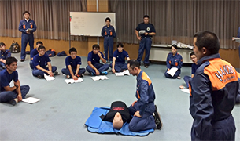
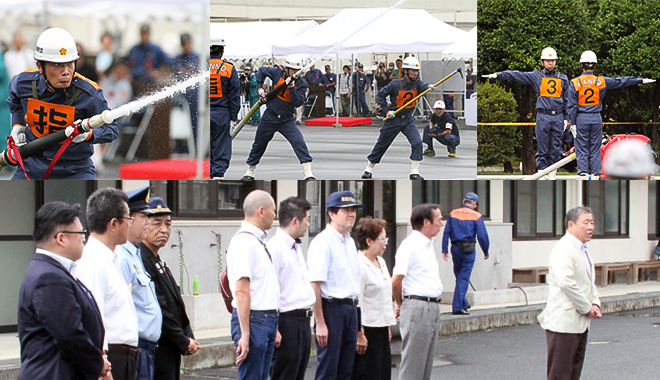
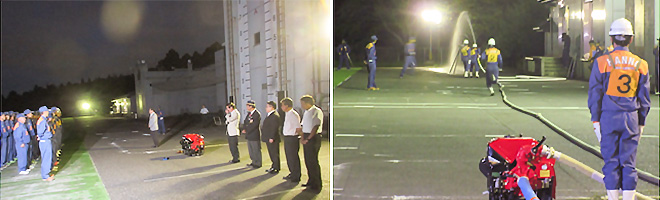
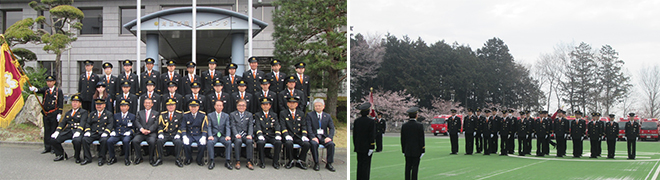

平成28年度TOPICS
□平成29年3月26日 第1分団活動情報「ソフトボール大会」を追加しました。
□平成29年3月22日 第4分団活動情報「飯能消防団出初式」他を追加しました。
□平成29年3月15日 第7分団活動情報「日帰り研修」を追加しました。
□平成29年3月13日 は組活動情報「飯能リハビリ館訪問」「震災復興元気市」を追加しました。
□平成29年3月13日 第10分団活動情報「火防巡視」を追加しました。
□平成29年3月6日 第8分団活動情報「文化財訓練」「火防巡視」を追加しました。
□平成29年3月2日 第10分団活動情報「ソフトボール大会」等を追加しました。
□平成29年3月1日 第2分団活動情報「ソフトボール大会」を追加しました。
□平成29年2月28日 第2分団活動情報「研修旅行」を追加しました。
□平成29年2月15日 第5分団活動情報「飯能消防団出初式」を追加しました。
□平成29年2月6日 第9分団活動情報「お餅つき」「飯能消防団出初式」を追加しました。
□平成29年1月31日 第10分団活動情報「奥武蔵駅伝競走大会」を追加しました。
□平成29年1月19日 第3分団活動情報「出初式」「新入団員紹介」を追加しました。
□平成29年1月12日 第11分団活動情報「飯能消防団出初式」を追加しました。
□平成29年1月11日 第10分団活動情報「飯能消防団出初式」を追加しました。
□平成29年1月11日 第2分団活動情報「飯能消防団出初式」を追加しました。
□平成29年1月6日 第6分団活動情報「歳末特別警戒」を追加しました。
□平成29年1月6日 第10分団活動情報「歳末特別警戒」を追加しました。
□平成28年12月20日 は組活動情報「埼玉県女性消防団員大会」を追加しました。
□平成28年12月16日 第5分団活動情報「特別点検」を追加しました。
□平成28年12月16日 第3分団活動情報「特別点検」「秋葉神社例祭」を追加しました。
□平成28年12月15日 第4分団活動情報「特別点検」等を追加しました。
□平成28年12月7日 は組活動情報「駿河台大学学生向け消防団ガイダンス」を追加しました。
□平成28年12月7日 第11分団活動情報「特別点検」を追加しました。
□平成28年12月5日 第9分団活動情報「特別点検」他を追加しました。
□平成28年12月2日 第10分団活動情報「特別点検」を追加しました。
□平成28年12月1日 第8分団活動情報「特別点検・表彰伝達式」を追加しました。
□平成28年12月1日 第11分団活動情報「特別点検予習」を追加しました。
□平成28年11月30日 第2分団活動情報「特別点検」を追加しました。
□平成28年11月29日 は組活動情報「特別点検」を追加しました。
□平成28年11月29日 第6分団活動情報「特別点検」を追加しました。
□平成28年11月22日 第5分団活動情報「救助資機材訓練」他を追加しました。
□平成28年11月22日 第2分団活動情報「特別点検予習」を追加しました。
□平成28年11月11日 第2分団活動情報「飯能まつり警備」を追加しました。
□平成28年11月9日 は組活動情報「飯能まつりパレード」を追加しました。
□平成28年11月7日 第10分団活動情報「第46回飯能まつり警備」を追加しました。
□平成28年11月1日 第10分団活動情報「吾野地区文化祭」を追加しました。
□平成28年11月1日 第6分団活動情報「全団員訓練」を追加しました。
□平成28年10月18日 第10分団活動情報「吾野地区体育祭」を追加しました。
□平成28年10月16日 第6分団活動情報「美杉台地区防災訓練」を追加しました。
□平成28年10月13日 第9分団活動情報「東吾野・地域を歩こう」他を追加しました。
□平成28年10月7日 第3分団活動情報「多機能積載車訓練」を追加しました。
□平成28年10月7日 第7分団「団員紹介」を追加しました。
□平成28年10月5日 第8分団活動情報「原市場地区体育祭駐車場整理」他を追加しました。
□平成28年10月4日 第6分団活動情報「加治小学校体育祭展示操法」を追加しました。
□平成28年9月26日 第10分団活動情報「普通救命講習」を追加しました。
□平成28年9月26日 は組活動情報「団員夜間救命講習」を追加しました。
■平成28年9月16日、23日 普通救命講習Ⅰ
飯能消防団 団員向け普通救命講習Ⅰを開催しました。2週に渡り金曜日の夜7時から3時間、団員向けの普通救命講習を開催しました。やっと一週間が終わり、ほっと一息つきたいところをグッと堪えての活動です。少しでも多くの団員が参加し、この活動が不慮の事故の際に役立てば幸いです。

□平成28年9月16日 第3分団活動情報「5カ町合同防災訓練」を追加しました。
□平成28年9月12日 は組活動情報「柳原地区自主防災訓練」を追加しました。
□平成28年9月6日 第2分団活動情報「二丁目自主防災訓練」を追加しました。
□平成28年9月6日 は組活動情報「一丁目自主防災訓練」を追加しました。
■平成28年8月20日（土）『第29回埼玉県消防操法大会に出場しました！』
過日開催された第29回埼玉県消防操法大会において、飯能消防団は残念ながら第3位という結果でした。
悲願の全国大会出場は果たせませんでしたが、目標に向かってひたむきに努力を重ねていくこと、サポートをしてくれた仲間や家族、そして遠いところを応援に駆けつけてくださった地元の方々の声援、それらの大切さやありがたさにあらためて気づかされました。これらを胸に刻み、これからも全国大会出場、そして地域の安心・安全を守るため日々精進してまいります。応援ありがとうございました！第5分団ページへ

右から、大久保飯能市長、砂長市議会議長、松橋市議会副議長、加涌議員、大津議員、野口議員、野田消防組合議長、荒幡消防局長、加賀谷消防組合副議長、中元消防組合議員
□平成28年8月29日 第2分団活動情報「一丁目自主防災訓練」を追加しました。
□平成28年8月29日 第10分団活動情報「吾野宿まつり警備」を追加しました。
□平成28年8月29日 「は組」活動情報「県操法大会」を追加しました。
□平成28年8月29日 第8分団活動情報「盆踊り大会警備」他を追加しました。
□平成28年8月15日 「は組」活動情報「基礎教育訓練」を追加しました。
□平成28年８月10日 第9分団「埼玉西部支部消防操法大会」等を追加しました。
■平成28年7月27日（水）飯能日高消防署にて「第29回埼玉県消防操法大会出場に係る激励会」
この日、平日のお忙しい中にも関わらず、飯能市長の大久保様、飯能市議会議長の砂長様、埼玉西部消防組合議会議長の野田様、同組合議員の中元様、飯能市消防後援会連合会長の黒米様、飯能市消友会副会長の菊地様、そして第5分団後援会長をはじめとした後援会やOBの皆様が激励に駆けつけてくださいました。激励会終了後は、小型ポンプ操法を実演し仕上がり具合をご覧いただきました。
いよいよ埼玉県大会まで1か月を切りました。これからさらに精度を高めていき、最高のパフォーマンスを披露できるよう心身ともに磨きをかけて優勝を勝ち取りたいと思います。

□平成28年7月25日 第3分団活動情報「飯能夏祭り警備」を追加しました。
□平成28年7月20日 第6分団活動情報「放水訓練」を追加しました。
□平成28年7月19日 は組活動情報「埼玉西部支部消防操法大会」等を追加しました。
□平成28年7月8日 第5分団活動情報「埼玉西部支部消防操法大会 」を追加しました。
□平成28年7月8日 第10分団活動情報「埼玉西部支部消防操法大会 」を追加しました。
□平成28年7月7日 第3分団活動情報「飯能大会」「支部大会」を追加しました。
□平成28年7月5日 第27回埼玉県消防協会埼玉西部支部消防操法大会成績を追加しました。
□平成28年7月4日 第1分団活動情報「第30回飯能消防団消防操法大会」を追加しました。
□平成28年6月30日 「第27回埼玉県消防協会埼玉西部支部消防操法大会」日程と出場順位を追加しました。
□平成28年6月30日 第4分団活動情報「支部出場隊激励会」等を追加しました。
□平成28年6月29日 第11分団活動情報「飯能消防団操法大会」を追加しました。
□平成28年6月27日 第5分団活動情報「第30回飯能消防団操法大会」等を追加しました。
□平成28年6月24日 第2分団活動情報「第30回飯能消防団操法大会」を追加しました。
□平成28年6月23日 第30回飯能消防団消防操法大会成績を追加しました。
□平成28年6月21日 第10分団活動情報「飯能消防団操法大会」を追加しました。
□平成28年6月15日 第11分団活動情報「操法練習」を追加しました。
□平成28年6月13日 第1分団活動情報「操法大会練習」を追加しました。
□平成28年6月13日 第9分団活動情報「全団員訓練操法模擬大会」を追加しました。
□平成28年6月10日 第3分団活動情報「操法大会訓練」を追加しました。
□平成28年6月10日 第2分団活動情報「分団訓練」を追加しました。
□平成28年6月10日 第5分団活動情報「入団式」「全団員訓練」を追加しました。
□平成28年6月8日 「第30回 飯能消防団消防操法大会」日程と出場順位を追加しました
■平成28年5月31日「飯能消防団操法大会に伴う激励会」
来る6月19日（日）、飯能消防団操法大会が開催されることに伴い飯能市長の大久保様、埼玉西部消防組合議会議長の野田様、同じく埼玉西部消防組合議会議員の中元様、飯能市消防後援会連合会長の黒米様、飯能市消友会長の井上様が激励に駆けつけてくださいました。飯能消防団操法大会はまだ序章にすぎません。これから埼玉西部支部操法大会、埼玉県消防操法大会と勝ち抜いていき、全国大会への切符を手にするためにさらなる訓練を重ねていかなければなりません。激励に駆けつけていただいた方々の期待に応えられるよう、飯能消防団一丸となって精進して参ります。
右側写真/左から、飯能消防団 梨木団長、飯能市 大久保市長、埼玉西部消防組合議会 野田議長、同消防組合議会 中元議員、飯能市消防後援会連合会 黒米会長、飯能市消友会 井上会長
□平成28年5月16日 第10分団活動情報「操法大会に向けて」を追加しました。
□平成28年5月16日 第4分団「28年度体制」を追加しました。
□平成28年5月10日 第2分団活動情報「こどもの日展示操法」を追加しました。
□平成28年5月10日 第1分団活動情報「操法大会訓練」を追加しました。
□平成28年5月10日 第11分団活動情報「入団式」を追加しました。
□平成28年5月2日 第2分団活動情報「操法大会練習」を追加しました。
□平成28年5月2日 第3分団活動情報「入団式」を追加しました。
□平成28年4月22日 第10分団活動情報「新入団員」を追加しました。
□平成28年4月19日 第9分団活動情報「飯能消防団入団式」を追加しました。
□平成28年4月5日 第2分団活動情報「新入団員」「歓送迎会」を追加しました。
■2016年4月3日（日）入団式
飯能日高消防署において、多数のご来賓のご臨席を賜り、平成28年度飯能消防団入団式が挙行されました。59名の昇格・異動があり、新たに入団した21名の新入団員には、梨木団長から辞令が交付されました。入団式の後には消防団員の基本となる礼式や各個・小隊訓練を実施しました。
